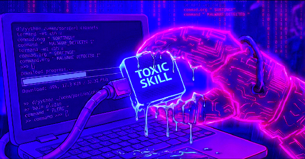
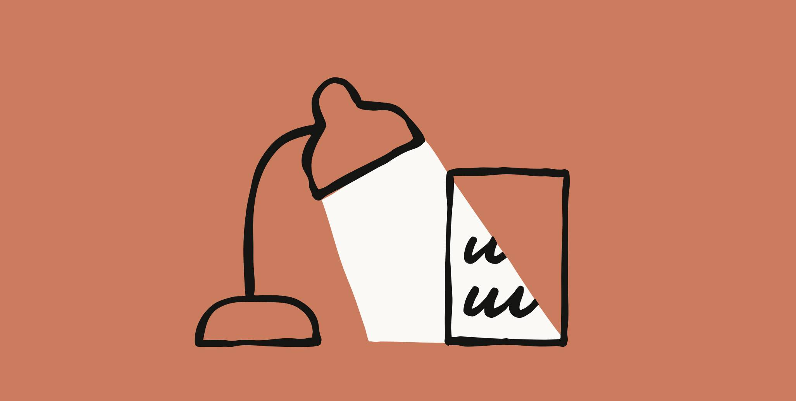

Extending
Claude Code —
MCP · Skills · Plugins
A 90-minute virtual deep-dive on the four extension primitives, the marketplace ecosystem around them, and the trust boundary the audience is already arguing about.
× 3 Pre-record each as fallback
The through-line
COLD-OPEN · 00:00 – 00:15/plugin. Bundles skills, subagents, slash commands, hooks, and pre-configured MCP servers.
defaults problem
SKILL.md — or a long-lived MCP server. Same plugin can ship both. SKILL.md is now cross-vendor.
capability problem
context: fork runs inside a subagent.[3] Fresh context, returns a summary.
context problem
PreToolUse can block.[4]
determinism problem
Run-of-show · 90 min
75 MIN CONTENT + 15 BUFFER| Time code | Block | Cue / why |
|---|---|---|
| 00:00 – 00:05 | Cold open · callback to S1 + S2opener animation reuse | 60-sec visual recap of S1 (AI) and S2 (Security). Series replays compound across episodes — re-anchor returning viewers in the first beat.[17] |
| 00:05 – 00:15 | Frame the problem + live pollpassive-to-active pivot | poll "Which extension primitive have you shipped to prod?" Average viewer checks email after 10 min of passive content — interrupt before they do.[18] |
| 00:15 – 00:30 | Concept block 1 · the layer cakeplugin → skill+mcp → subagent → hook | Walk §1 stack top-down. Land the question "context problem, determinism problem, or defaults problem?" Monologue cap ≤ 7 min then chat prompt. |
| 00:30 – 00:45 | Demo A · FastMCP + Inspectorlive build, ~12 min | demolive Build a FastMCP tool, run Inspector against it. FastMCP ⭐ 14k. Show-don't-tell beats slide-heavy stretches. |
| 00:45 – 00:50 | Mid-session recapattention dip · halfway mark | 3-bullet recap of the layer cake. Tease the trust trifecta. Attention drops at 0:45 — recap pulls it back.[17] |
| 00:50 – 01:00 | Concept block 2 · trust boundaryS2 callback compound | The session's reason to exist. Three primitives, three CVE timelines — see §3. This is the block that compounds on S2's audience habit. |
| 01:00 – 01:12 | Demo B · ship a plugin in one breathmkdir → plugin.json → SKILL.md → --plugin-dir | demolive Four commands, one breath. Then demo C: sandboxed tool-poisoning repro. Cued recording ready.[21] |
| 01:12 – 01:22 | Synthesis + Q&Aco-host runs chat | Q&A lifts retention ~32% vs. no-Q&A.[17] Co-host filters and surfaces. Speaker stays in flow. |
| 01:22 – 01:30 | Wrap · S4 teaser · continuity bridgecapture cohort while attention is hot | Hand the open question to the audience (§7). Tease S4 — A2A coordination, or an auditability hard look. Continuity offer at end converts 25–40% of completers.[17] |
Trust dossier · the reason this session exists
BLOCK 50:00 – 60:00
SNYK · TOXICSKILLSThe unifying frame
SLIDE · ONEThree ingredients. Any agent that has all three is a credential.
The live wire · Skills vs MCP
EXPECT THIS QUESTION
I expect we'll see a Cambrian explosion in Skills which will make this year's MCP rush look pedestrian by comparison. — Simon Willison, Oct 2025
| Use… | When… | Because |
|---|---|---|
| MCP | Long-lived stateful connection — DB session, OAuth handshake, SaaS API | You need a server that holds state across calls[19] |
| Skill | "Run this CLI, read the output" is enough | Markdown + bundled scripts; loads on demand[3] |
| Both | You want one install surface | Plugins bundle skills and pre-configured MCP servers[1] |
Live demos · shot list
3 EARNED SLOTSPlugin in one breath
Four commands. Ship a working plugin live without leaving the terminal — to land the "packaging unit" argument viscerally.
mkdir my-plugin && cd my-plugin
echo '{...}' > plugin.json
echo '---' > SKILL.md
claude --plugin-dir .
Tool-poisoning repro
SANDBOXED · NO LIVE TARGETS
Reproduce Willison's prompt-injection-via-MCP-tool-description trick in a sealed VM. The audience needs to see the trifecta, not read it.
# sandbox VM only
# no network egress
# pre-recorded fallback cued
Briefing dossiers · supporting research
PREP READING · BACKSTAGEMCP deep-dive
Talk-prep brief for a 1–2 hour deep-dive on the Model Context Protocol — architecture, 2026 spec, ecosystem, security trifecta, live-demo recipes.
DOC · 02Claude Code Skills
A Skill is a Markdown file + optional bundled scripts that Claude loads on demand. Cheaper than CLAUDE.md, more discoverable than a slash command, lighter than a subagent — now an open cross-vendor standard.
DOC · 03Plugins & the Marketplace
What plugins actually are, how the official + community marketplaces work, the few that earn their keep, and the trust footgun to flag in any 1–2 hour deep-dive.
DOC · 04Subagents, hooks, and the rest of the harness
One-page mental model: subagents (isolation), hooks (determinism), and the config substrate (skills, permissions, settings).
DOC · 05Comparison & decision framework
Score candidate topics on four axes — audience fit, series continuity, speaker readiness, demo viability — with weights chosen before scoring. Skip RICE; it's product-feature shaped.
DOC · 06Session delivery plan
A 90-minute run-of-show with 8–12 min active blocks, mid-session recap, and series-continuity callbacks tuned for the third session in a deep-dive series.
The harness boundary moved from "what Claude Code knows" to "what the marketplace ships."
Registry-as-trust-root is the only realistic answer to supply-chain attacks [10] — and it isn't solved yet. So the honest question to leave on stage: should session 4 be agent-to-agent (A2A) coordination, or a hard look at whether any of this is auditable enough to put on the critical path?